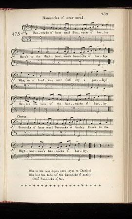
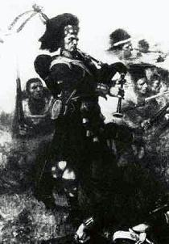

Bannocks O' Bear Meal
Galettes de Gruau
Burns's Scots Musical Museum Volume V N°475, page 489 (1796)and Hogg's "Jacobite Relics" 2nd Series Appendix - "Jacobite Songs" N°21 (1821)
Tune
"The Killogie Version SMM N°475
Sequenced by Chr.Souchon
Related songs:
"Argyle is my name
"Cakes o' Croudy"

|
To the tune:
The tune The Killogie was kept in use by a rustic song beginning: 'A lad and a lassie lay on a killogie.' The verses are neither edifying nor instructive. The tune rejoiced in a variety of names. It is Bonox of bear meal in Margaret Sinkler's MS., 1710; as Johnny and Nelly in "Orpheus Caledonius", 1725, No. 21; as, I'll never leave thee in Watts's "Musical Miscellany", 1730, iv. 74; - McGibbon's "Scots Tunes", 1746, 8, to which Burns directed Johnson for the tune; - and in the "Scots Musical Museum", 1796, No. 475. Two settings are in the "Caledonian Pocket Companion": 1751, vol.ll. 6: one entitled Banoks of Bear meal , and the other in vol. vi. 1754, 26, as There was a lad and a lass in a killogie . Burns's MS. is in the British Museum. It is framed on the seventeenth century ballad included by Hogg in his "Jacobite Relics", 1819, vol 1. n)11. Hogg got it probably from Myln's manuscript . Source "Complete Songs of Robert Burns Online Book" (cf. Liens). |
A propos de la mélodie:
La mélodie The killogie ("Le four de potier") servait à chanter un chant pastoral dont le premier vers était: 'Un gars et une fille couchés sur un four...' Le reste est à l'avenant, ni édifiant, ni instructif. Ladite mélodie a une multitude de noms. Elle s'appelle Bonox of bear meal (Gâteaux de gruau) dans le manuscrit de Margaret Sinkler datant de 1710; Johnny and Nelly (Jeannot et Hélène) dans l'"Orpheus Caledonius" de William Thomson, 1725, No. 21; I'll never leave thee (Je ne te quitterai jamais) dans le recueil de Watts, "Musical Miscellany", 1730, iv. 74; - dans celui de McGibbon, "Scots Tunes", 1746, 8, auquel Burns renvoya Johnson qui cherchait cette partition; - et dans le "Musée Musical Ecossais", 1796, No. 475. On en trouve deux versions dans le "Caledonian Pocket Companion" d'Oswald: l'une en 1751, vol.ii. 6, intitulée Banoks of Bear meal (Gâteaux de gruau), et l'autre dans le vol. vi. 1754, 26, There was a lad and a lass in a killogie (Il y avait un gars et une fille dans un four de potier). Le manuscrit de Burns se trouve au British Museum. Il s'inspire de la ballade du 17ème siècle qui figure parmi les "Reliques Jacobites", 1819, vol 1. n°11 de Hogg, lequel l'a certainement trouvée dans le manuscrit de Myln . Source: "Complete Songs of Robert Burns Online Book" (cf. Liens). |

|
BANNOCKS OF BARLEY
Chorus: Bannocks o' bear meal, Bannocks o' barley, Here's to the Highlandman's Bannocks o' barley! 1. Wha, in a brulyie, will First cry a parley? Never the lads wi' the Bannocks o' barley, Bannocks o' bear meal, etc. 2. Wha, in his wae days, Were loyal to Charlie? Wha but the lads wi' the Bannocks o' barley! Bannocks o' bear meal, etc. ********** Hogg's "Jacobite Relics -Volume II" version differs slightly from the previous one and has one additional verse: 1. Bannocks o' bear-meal, bannocks o' barley, Here's to the Highlandman's bannocks o' barley. Wha in a bruilzie will first cry " a parley ?" Never the lads wi' the bannocks o' barley ! 2. Wha was it drew the gude claymore for Charlie ? Wha was it cowed the English lowns rarely ? An' clawed their backs at Falkirk fairly ? Wha but the lads wi' the bannocks o' barley ! 3. Wha was't when hope was blasted fairly, Stood in ruin wi' bonny Prince Charlie? An' 'neath the Duke's bluidy paw dreed fu' sairly ? Wha but the lads wi' the bannocks o' barley ! ********** Notes: 1° The original lyrics were first written by Lord Newbottle in 1688 as a satire of the English Civil War and then the lyrics were altered to form a Jacobite song. Many of the lyrics in the 'Museum' were altered, improved and added to by Burns and this may be the case here. 2° All you want to know about bannocks is here: terreceltiche.altervista.org/bannocks-of-barley |
LES GALETTES DE GRUAU
Refrain: Galette au gruau, Ou galette d'orge, Aux Highlands un toast Ainsi qu'à leur orge! 1. Qui dans la bagarre Veut parlementer? Non pas les mangeurs De gâteaux dorés, Galettes de gruau, etc. 2. Qui a dans l'épreuve, Soutenu Charlie? Sinon les mangeurs De gâteaux, pardi! Galettes de gruau, etc. ********** La version des "Reliques Jacobites" de Hogg est légèrement différente et a une strophe de plus. 1. Galette au gruau, Ou galette d'orge, Aux Highlands un toast, Ainsi qu'à leur orge! Qui, las du combat Veut parlementer? Non pas les mangeurs de gâteaux dorés, 2. Qui donc pour Charlie Tira son claymore? Qui rossa l'Anglais Encore et encore? Qui donc à Falkirk les a dispersés? Pardi, les mangeurs de gâteaux dorés! 3. Qui donc, lorsque le combat changea d'âme, Se sacrifia jusqu'à la mort pour Charles? Sur qui s'abattit l'ire du Boucher? Sinon les mangeurs de gâteaux dorés? ********** Notes: 1° les paroles d'origine furent écrites par Lord Newbottle en 1688 et constituent une satire de la guerre civile anglaise. Puis elles furent transformées en chant Jacobite. Un grand nombre de textes du "Musée" furent ainsi modifiés, améliorés et augmentés par Burns. C'est sans doute le cas ici.
2° Vous saurez tout sur les "bannocks" en cliquant ici:
terreceltiche.altervista.org/bannocks-of-barley
|

|
Lady Nairne uses the same tune to extol the glorious achievements of the
Royal Highland Regiment
, as the "Black Watch" was called as from 1758, in the Napoleonic wars..:
1. Wha, for auld Geordie, at Egypt and Maida,
|
Lady Nairne se sert de la même mélodie pour glorifier les exploits du
Régiment royal des Highlands
, comme on appela la "Garde Noire" à partir de 1758, dans les guerres napoléoniennes...
1. Qui donc, pour le Roi George, en Egypte, à Maida,
|